UC Berkeley CS 280A · Computer Vision and Computational Photography
PROJECT 4
[Auto]Stitching Photo Mosaics
Avery Lee · October 27, 2026
Photos taken by rotating a camera about a fixed point are related by a homography, a 3×3 projective transform. Once the homography between two photos is known, one photo can be warped into the other's view, and overlapping photos can be stitched into one wide mosaic. Every result is available here.
PART AImage Warping and Mosaicing
Correspondences are clicked by hand, and every warp and blend is written from scratch.
A.1Shoot the Pictures
▸ library 0
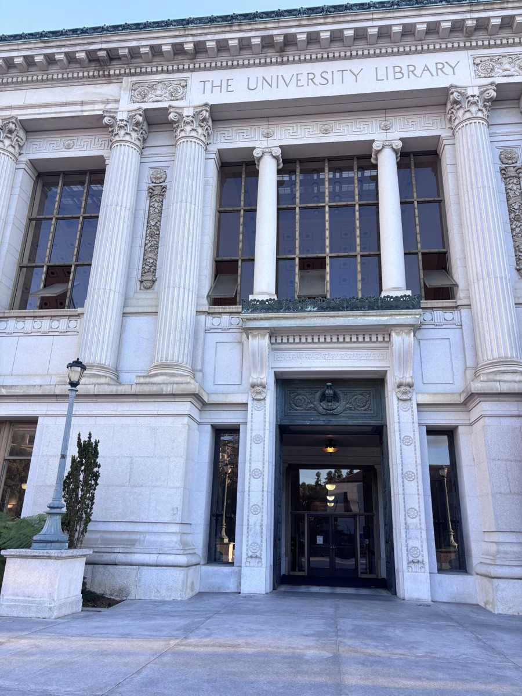
▸ library 1 REFERENCE
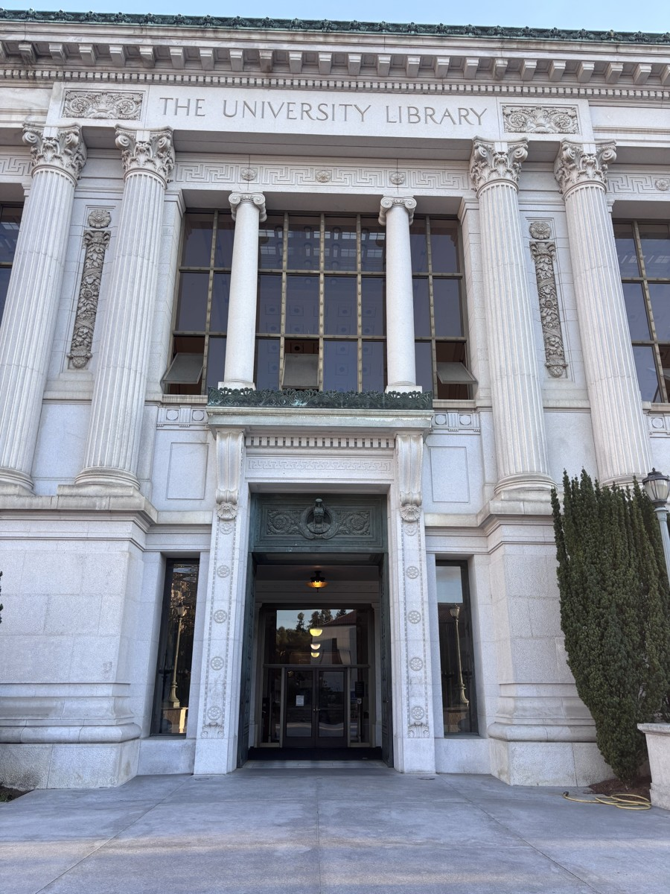
▸ library 2
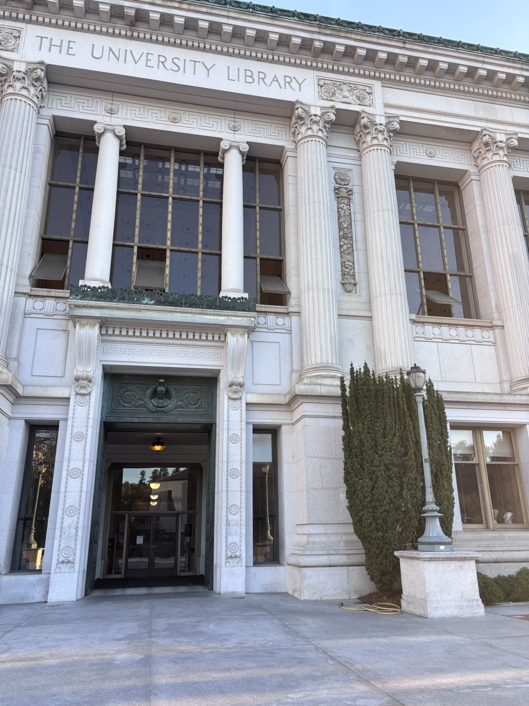
library: Doe Library
▸ rumi 0
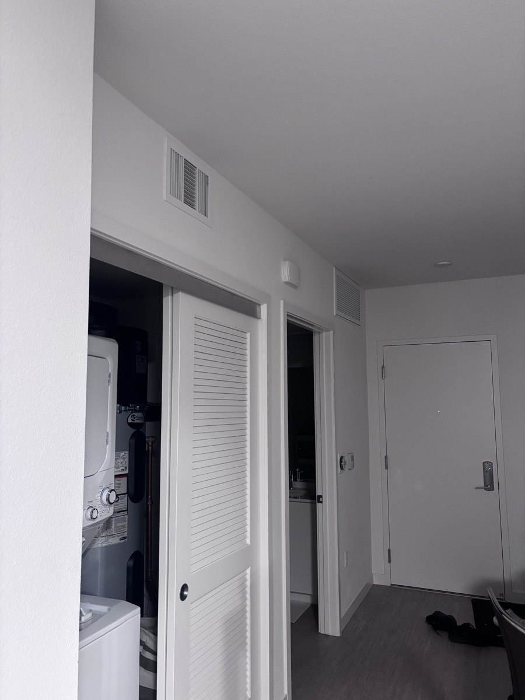
▸ rumi 1 REFERENCE
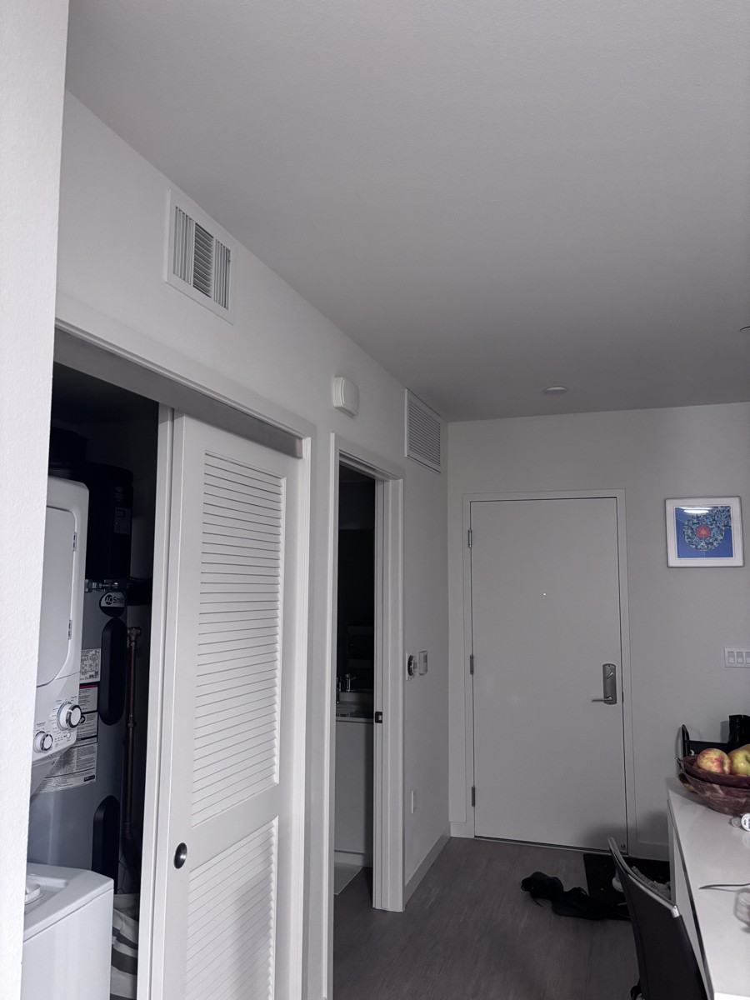
▸ rumi 2
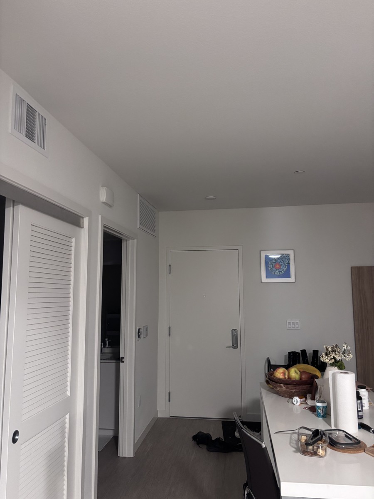
rumi: my apartment
▸ cmu 0▸ cmu 1
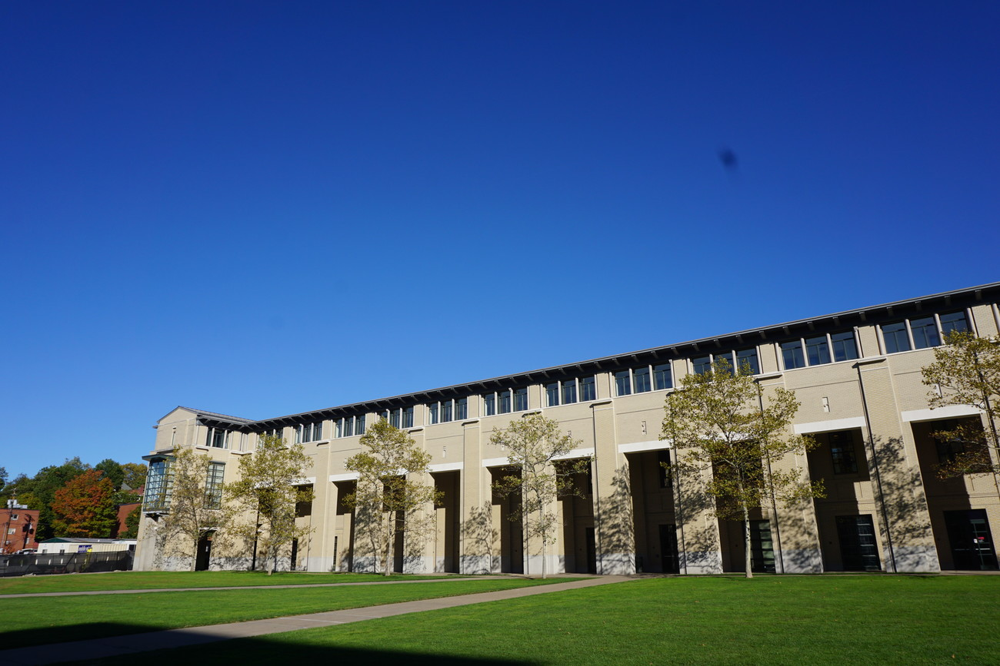
▸ cmu 2 REFERENCE
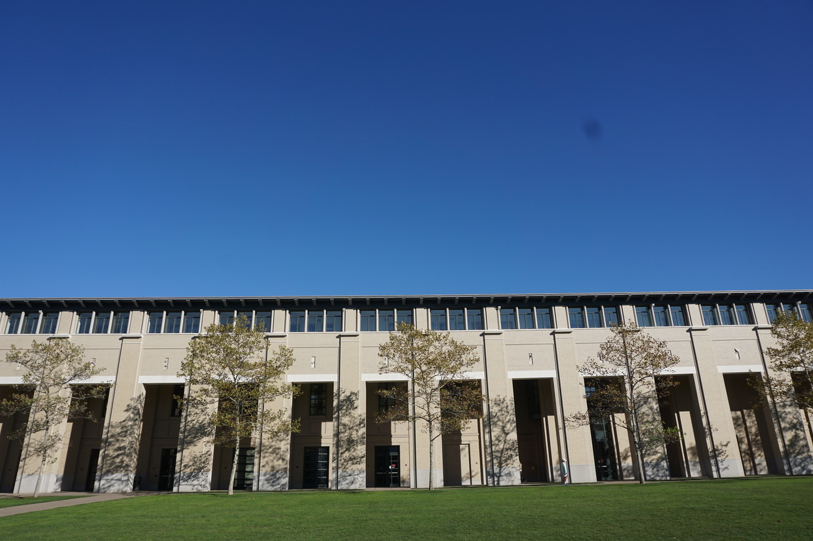
▸ cmu 3
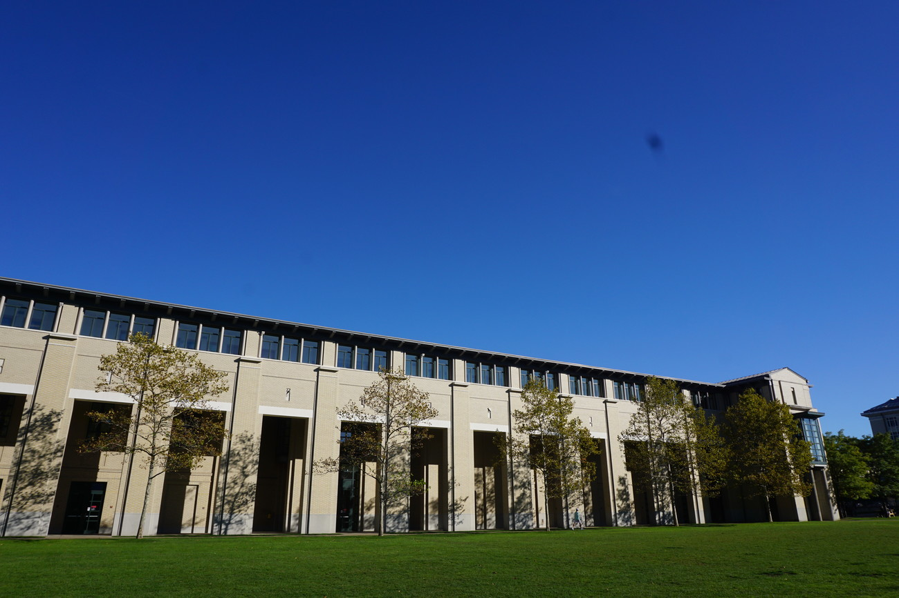
▸ cmu 4
cmu: CMU campus, from the OpenPano example data by Yuxin Wu
For the transform between two photos to be a homography, the camera has to rotate about its center of projection without moving. I held the phone in place and turned it between shots, with about half of each frame overlapping the next.
The library and rumi photos are my own. The cmu photos are from the OpenPano example data and cover a wide view. All images are resized to 1200 pixels on the long side before processing.
REFERENCE marks the middle frame that the other frames are warped onto.
A.2Recover Homographies
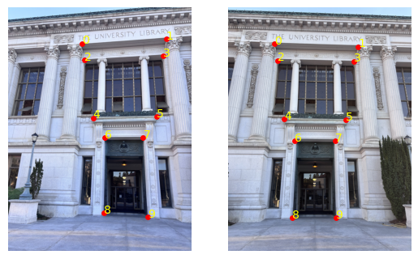
10 correspondences between library 0 and library 1
A homography maps a point \((x, y)\) to \((x', y')\) in homogeneous coordinates, with the bottom-right entry fixed to 1, so it has 8 unknowns:
$$\begin{bmatrix} a \\ b \\ w \end{bmatrix}=\begin{bmatrix} h_1 & h_2 & h_3 \\ h_4 & h_5 & h_6 \\ h_7 & h_8 & 1 \end{bmatrix}\begin{bmatrix} x \\ y \\ 1 \end{bmatrix},\qquad x'=\frac{a}{w},\quad y'=\frac{b}{w}$$
Multiplying both sides by \(w = h_7x+h_8y+1\) makes the equations linear in \(h\):
Each correspondence adds two rows to a system \(A\mathbf{h}=\mathbf{b}\):
$$\begin{bmatrix} x & y & 1 & 0 & 0 & 0 & -xx' & -yx' \\ 0 & 0 & 0 & x & y & 1 & -xy' & -yy' \end{bmatrix}\mathbf{h}=\begin{bmatrix} x' \\ y' \end{bmatrix}$$
Four points give an exact solution, but clicks are noisy, so I clicked 10 points and solved the 20 × 8 system with least squares, minimizing \(\lVert A\mathbf{h}-\mathbf{b}\rVert^2\). The recovered homography from library 0 to library 1 is:
The diagonal is close to 1 and the translation \(h_3\) is about \(-171\) pixels in \(x\), which matches the camera turning right between the two frames.
A.3Warp the Images
library 0, original
Nearest neighbor
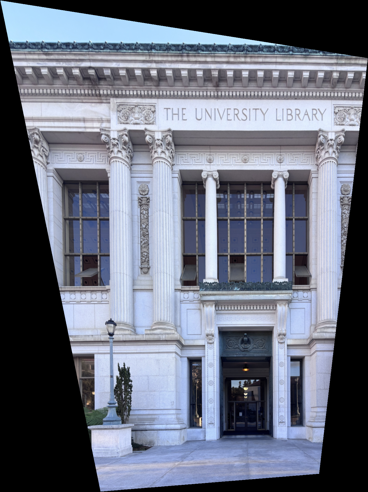
Bilinear
library 0, rectified
rumi 0, original
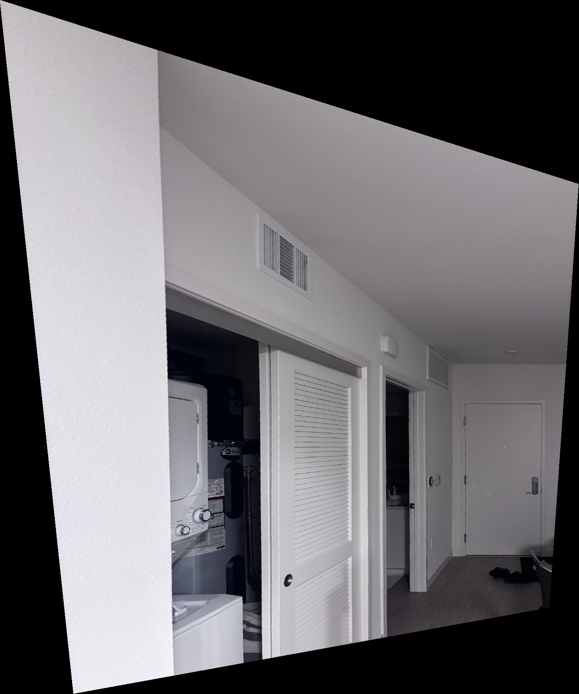
Nearest neighbor
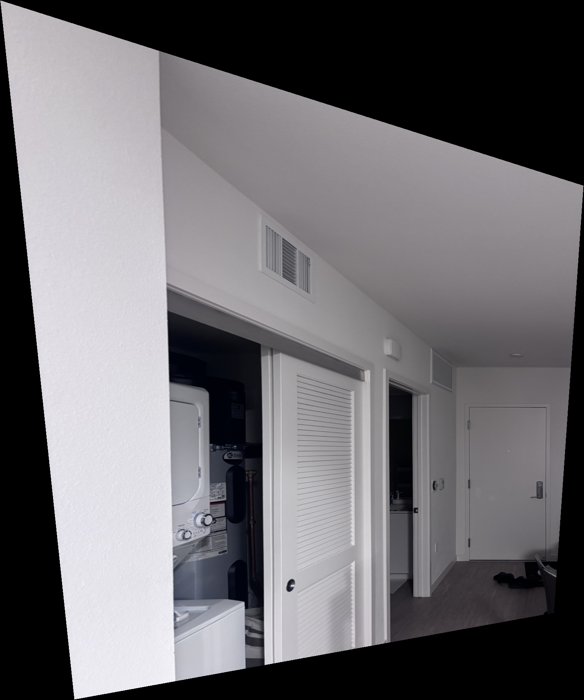
Bilinear
rumi 0, rectified
warpImageNearestNeighbor and warpImageBilinear both use inverse warping. First, the four corners of the input are sent through \(H\) to get the bounding box of the output. Then every output pixel \((x', y')\) is sent back through \(H^{-1}\) to find where its color comes from in the input:
$$\begin{bmatrix} a \\ b \\ w \end{bmatrix}=H^{-1}\begin{bmatrix} x' \\ y' \\ 1 \end{bmatrix},\qquad (x, y)=\left(\frac{a}{w}, \frac{b}{w}\right)$$
The source point \((x, y)\) usually falls between pixels. Nearest neighbor rounds it to the closest pixel. Bilinear takes a weighted average of the four surrounding pixels, where \(\Delta x = x-\lfloor x\rfloor\) and \(\Delta y = y-\lfloor y\rfloor\).
The source point between the four pixel centers
\(I_{00}\) is the pixel at \((\lfloor x\rfloor, \lfloor y\rfloor)\), with each pixel's value sitting at its center. The first digit is the step right and the second is the step down, so \(I_{10}\) is one pixel to the right, \(I_{01}\) is one below, and \(I_{11}\) is diagonal. Each pixel's weight is the area of the opposite rectangle, so the closest pixel counts the most:
Each output pixel also gets a fourth channel, alpha, which is its opacity: 1 means fully opaque and 0 means fully transparent. A pixel whose source lands inside the input gets alpha 1. A pixel whose source falls outside gets alpha 0 and a color of 0, so it is transparent. In the images shown here the alpha channel is dropped, so those pixels appear black, like the empty corners of the rectified images.
Rectification
To rectify, I clicked the four corners of something I know is rectangular and computed the homography that sends them to a 200 × 400 rectangle.
Where the four clicked corners are sent
The first rectification uses the entrance doorway in library 0. After the warp, the library's columns are vertical and its windows are rectangles.
The second rectification uses the entrance door in rumi 0, which becomes a flat rectangle after the warp. The zoomed crops land on the sliding door to its left.
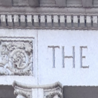
Zoom, nearest neighborZoom, bilinear
library 0, zoomed in
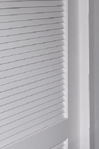
Zoom, nearest neighbor
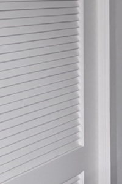
Zoom, bilinear
rumi 0, zoomed in
Speed and quality
Image
Nearest neighbor
Bilinear
library 0
0.29 s
0.56 s
rumi 0
0.43 s
0.73 s
Bilinear is about 1.7 to 1.9 times slower because it reads four pixels and computes four weights for every output pixel, while nearest neighbor reads one.
In the zoomed crops, nearest neighbor gives jagged, stair-stepped edges on the “THE” lettering and on the slats of the sliding door, because neighboring output pixels snap to the same input pixel. Bilinear edges are smooth, at the cost of being slightly softer. Since the difference in time is under half a second, I use bilinear for all the mosaics in the following sections.
A.4Blend the Images into a Mosaic
library 0library 1library 2
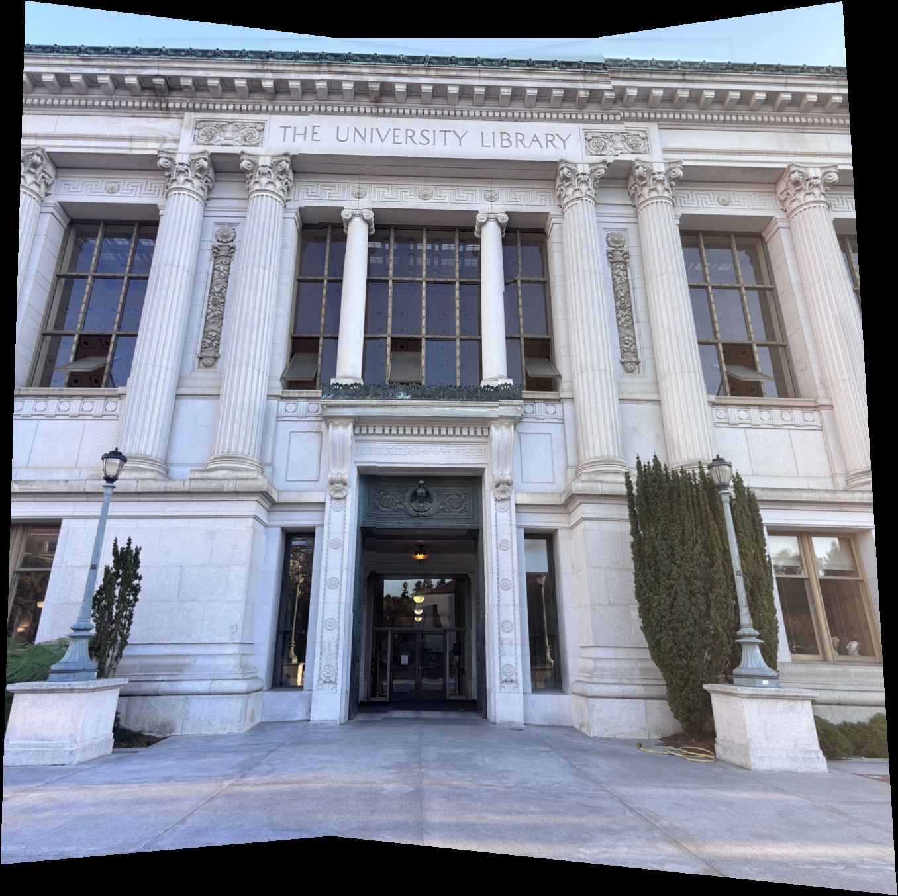
library mosaic
rumi 0rumi 1rumi 2
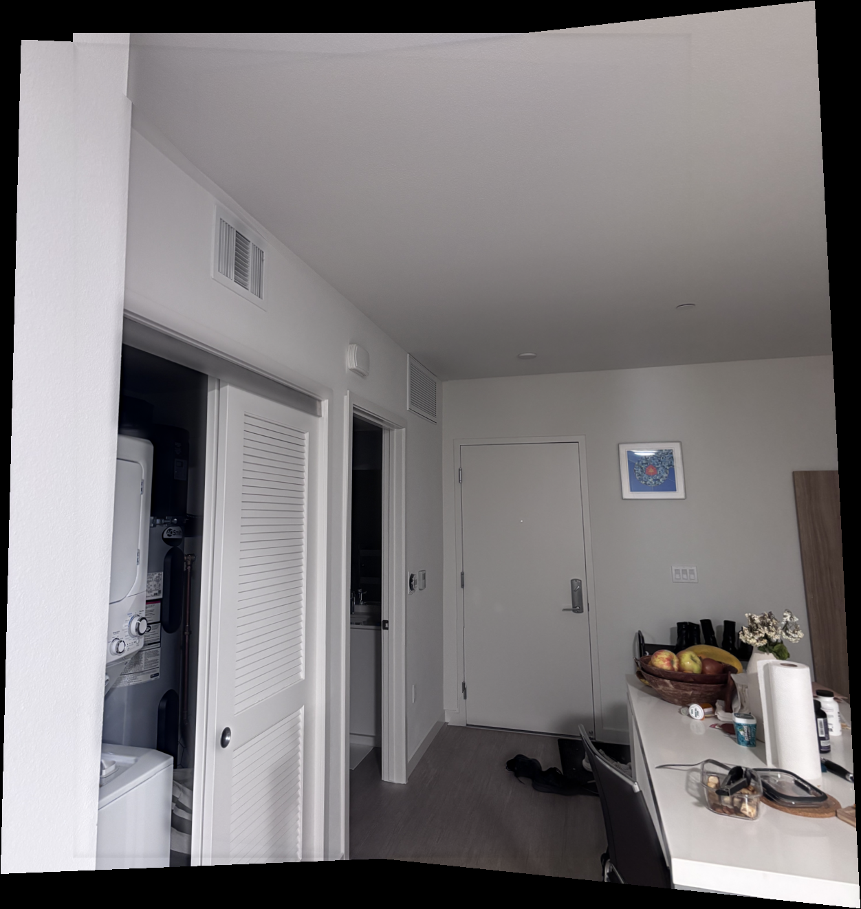
rumi mosaic
cmu 1cmu 2cmu 3
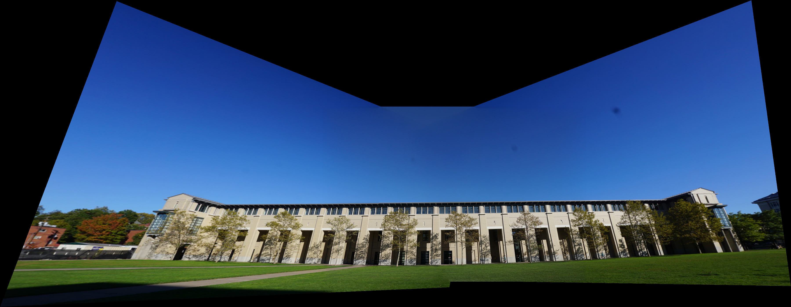
cmu mosaic
Each mosaic uses the middle frame as the reference, so its homography is the identity. The side frames are each matched to the middle frame with 10 clicked correspondences. All frames are then warped onto one shared canvas in one pass:
Warp the corners of every frame and take the union of their bounding boxes as the canvas.
Warp every frame onto that canvas with bilinear interpolation, keeping the alpha channel.
Give each frame a weight that is 1 at its center and falls to 0 at its edges: the distance transform of its alpha, divided by its maximum.
Blend the frames with a two-band Laplacian blend.
The two-band blend splits each warped frame \(I_i\) into a low band \(G_\sigma * I_i\), using a Gaussian with \(\sigma=5\), and a high band \(I_i - G_\sigma * I_i\). The low bands are averaged with the weights \(w_i\), which hides differences in exposure. The high band at each pixel is taken only from the frame with the largest weight there, which keeps edges sharp and avoids ghosting:
The mosaic is \(\text{low}+\text{high}\), clipped to \([0, 1]\).
library
The lettering, columns and doorway line up across the seams. library 0 and library 2 tilt slightly when warped onto library 1, which leaves black wedges along the top and bottom of the mosaic. The facade is evenly lit, so the seams between the photos are hard to see.
rumi
The scene is indoors and close to the camera, so even a small shift of the phone causes parallax. The sliding door, entrance door, picture frame and kitchen counter line up across the seams. The three photos overlap a lot, so the mosaic is only a little wider than a single photo.
cmu
The building's roofline stays straight, and its columns and trees line up across the seams. cmu 1 and cmu 3 are stretched wider toward the outer edges, which gives the mosaic its bow-tie shape, because a plane stretches whatever points far from its center. The sky blends smoothly even though its brightness differs between the photos.
A cylinder wraps around the camera, so it can hold a view wider than 180°. The cylinder's radius is the focal length in pixels. The focal length has the same ratio to the image width in millimeters as in pixels:
The cmu photos were taken with a 24 mm lens (35 mm equivalent), and a 35 mm frame is 36 mm wide, so for a 1200-pixel-wide image:
$$f=\frac{24}{36}\times1200=800\ \text{px}$$
cmu 0 and cmu 4 do not overlap the reference (cmu 2) enough, so their homographies are chained through their neighbors: \(H_0=H_1H_{0\to1}\) and \(H_4=H_3H_{4\to3}\).
Inverse sampling
Each pixel \((x', y')\) of the unrolled cylinder, measured from the reference center \((c_x, c_y)\), is an angle \(\theta=\dfrac{x'}{f}\) around the cylinder and a height \(h=\dfrac{y'}{f}\) on it. That direction hits the reference image plane at
This divides by \(\cos\theta\), which breaks at 90°. Multiplying through by \(\cos\theta\) gives the same point in homogeneous coordinates with no division, so it works past 90°:
$$\begin{bmatrix} a \\ b \\ w \end{bmatrix}=\begin{bmatrix} f\sin\theta+c_x\cos\theta \\ f\,h+c_y\cos\theta \\ \cos\theta \end{bmatrix}$$
This point is sent back through \(H_i^{-1}\) into frame \(i\) and sampled with bilinear interpolation, so each pixel is read straight from the original photo. If the third coordinate after \(H_i^{-1}\) is 0 or negative, the direction is behind that frame's camera and the pixel is left empty. The canvas size comes from sending 100 points along each frame edge forward onto the cylinder, since straight edges become curves. The frames are then combined with the two-band Laplacian blend.
On the cylinder, all of cmu 0, 1, 2, 3 and 4 fit. Vertical lines stay vertical, while straight horizontal lines like the building's roofline bend into curves. The wavy top and bottom edges come from the camera tilting slightly between frames.